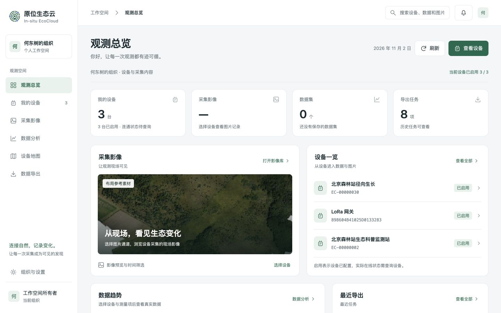
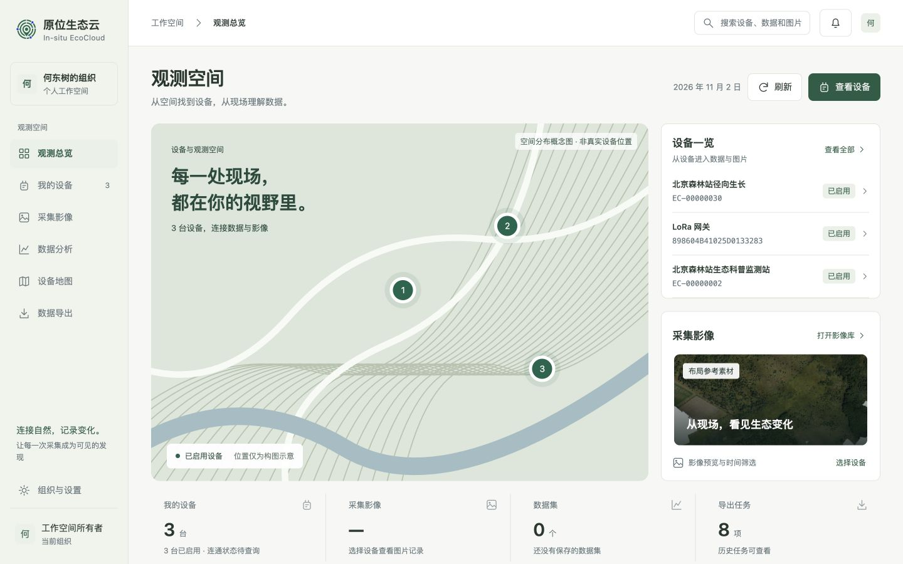
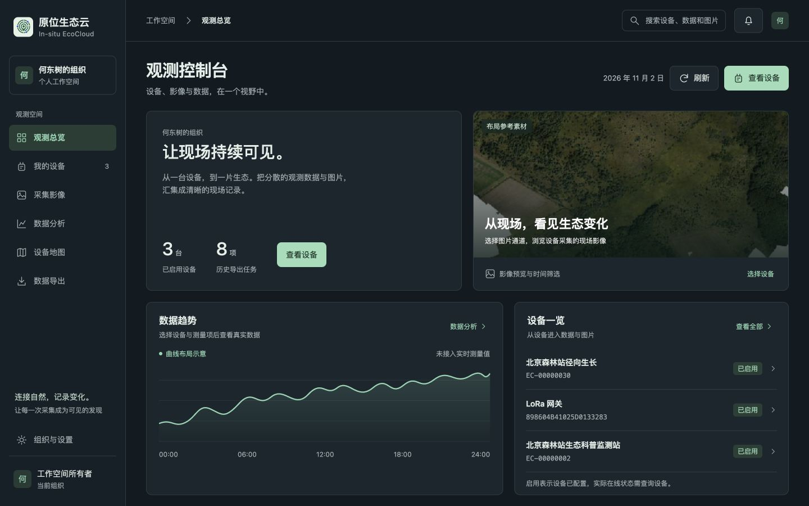

原位生态云 / 用户前端改版
三个可点击的真实初稿。统一保留设备、图片、时序数据与导出工作流，用不同结构组织内容。

推荐。图片和设备并列，数据趋势紧随其后。适合日常查看、科研分析和多设备管理。

以设备空间为入口，把地理视野、现场图片和设备列表组织在一起。适合跨站点巡查。

深色背景衬托影像和曲线，设备状态与数据浏览更集中。适合高频监测与长时间使用。
查看六个候选及另外三个备选
预览数据说明：设备名称、3 台设备、0 个数据集和 8 项导出来自现有首页。照片是仓库内 OAM / BSU 森林航拍参考素材（CC BY 4.0），不是北京站实采图。曲线与空间位置均为布局示意。预览不执行真实查询与导出。